The uses of the MDE Rich Text Widget is easy and straightforward. The user interface is splitted into two sections. The toolbar and the text area.
The toolbar contains tools which helps for formatting the typed text in the text area. For instances it contains bold tool to turn into bold style the selected text or newly typed characters after activating the tool.
Here, an example of toolbar which contains most used tools
Commonly used Tools (also, called items):
 | Open in Editor | Allows to open an Eclipse editor which contains a MDE Rich Text Widget binded to the current model element |
| 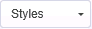 | Styles | Allows to apply a style on the selected or typed characters |
| 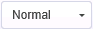 | Paragraph Format | Allows to apply a style on the paragraph |
| 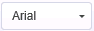 | Font Name | Allows to apply a font on the selected or typed characters |
 | Font Size | Allows to apply a size on the selected or typed characters |
 | Clipboard | Allows to cut, copy selected characters, and past new characters in text area |
| 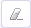 | Clean content | Allows to remove all content in text area |
| 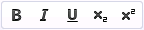 | Baisc Styles | Allows to apply a basic style (bold, italic...) on selected or typed characters |
| 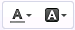 | Colors | Allows to apply text and background color on selected or typed characters |
 | Paragraph | Allows to add list (numbered or bulleted) and increase or decrease indentation of selected or typed characters. See List Properties section for the customization of list properties |
 | Links | Allows to add links. See the Link management section for more information |
The text area is used to add text content, links and images. It looks like following picture

A default behavior at adding numbered list ( ) is enumerating items by decimal as shown below in text area:
) is enumerating items by decimal as shown below in text area:
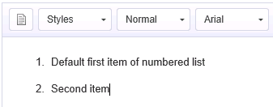
To access to the properties of the list, right-click on an item of the list and then, choose Numbered List Properties as shown after:

This window will appear.
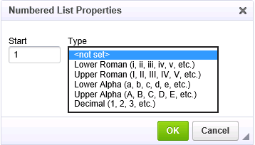
The available customizations are:
For instance, With Upper roman enumeration and start index to 100:
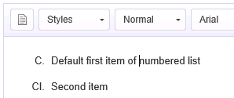
A default behavior at adding bulleted list ( ) is enumerating items by disc as shown below in text area:
) is enumerating items by disc as shown below in text area:

To access to the properties of the list, right-click on an item of the list and then, choose Bulleted List Properties as shown after:
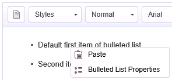
This window will appear.

The available customizations are:
For instance, With square type:
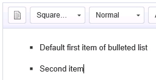
NB: No Set has the same effect as Decimal or Disc type
MDE Rich text provides a tool ( ) for adding links into the contents and in the same way the navigation to the target of the links with the appropriate tool.
) for adding links into the contents and in the same way the navigation to the target of the links with the appropriate tool.
The link types allowed are:
| URL | for instance: http://www.polarsys.org/kitalpha/ |
| File (Absolute Path) | Link to the files on the local disk of the computer. For instance: /home/me/folders/program.c |
| File (Project Relative Path) | Link to the file in the workspace. For instance: /project.name/model.componentsample |
| Model Element | Link to any model element of the resource set of the element being editing. |
| Diagram Element | Link to Sirius Diagrams. |
Clicking on a Add link item will open this wizard
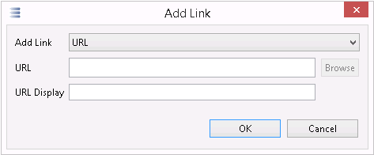
The first field Add link specifies the type of the link to add (See before)
The second field URL specifies the concrete location (for instance, with URL type, www.polarsys.org). This field shows a Browse button. This button allows to select the link's target of the File (Absolute or Project Relative Path, Model or Diagram element types. For the Model or Diagram Element URL type, this field is in read only mode. The user, must use the Browse button to select the target of the links
The third field URL Display allows to the user to give a humain readable content of the link. This will be appears in the text area of the widget. For instance, the URL: www.polarsys.org, the displayed text will be Polarsys.
Navigation refers to the opening of the target of the links with the appropriate tool.
For example, navigation on the URL type link opens the target with the default browser
To navigate to the target of a link, righ-click on the link and choose the menu Open Link
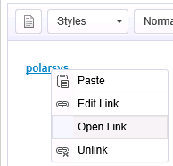